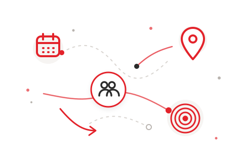

PROTOTYPE
これは初めて観戦ガイドへの組み込みを想定した静的デモです。入力した誕生日・出身地・生まれ年は保存・送信しません。
DISCOVER
あなたの入口から、
気になる選手へ。
気になる共通点をひとつ選んでください。結果はこのページだけで表示され、プロフィールは公式サイトへ遷移します。
BIRTHDAY
あなたの誕生日を選んでください
同じ日に生まれた選手、同じ月に生まれた選手、そして誕生日の近くにあるホームゲームを探します。
生年月日全体ではなく、月日だけを使って検索します。
BIRTHPLACE
出身地から、今季のレッズをのぞいてみよう
赤が濃いほど、出身選手が多い都道府県です。地図の丸印、地域ボタンのどこからでも選べます。
0人 1人 2人 3人以上
地図の操作が難しい場合は、下の地域ボタンから選べます。
気になる都道府県を
選んでください。
GENERATION
あなたの生まれ年を選んでください
同じ生まれ年を優先して、いない場合は前後の世代から選手を見つけます。
年齢ではなく、生まれ年で判定します。

READY
共通点を選んで、
選手を見つけよう。
検索すると、ここにあなたとつながる選手が表示されます。
FULL SQUAD
今季のトップチーム
検索結果だけでなく、気になる選手を一覧からも見つけられます。